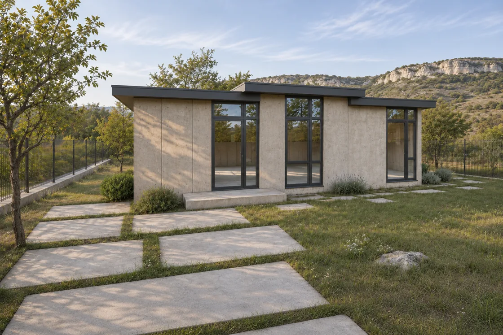
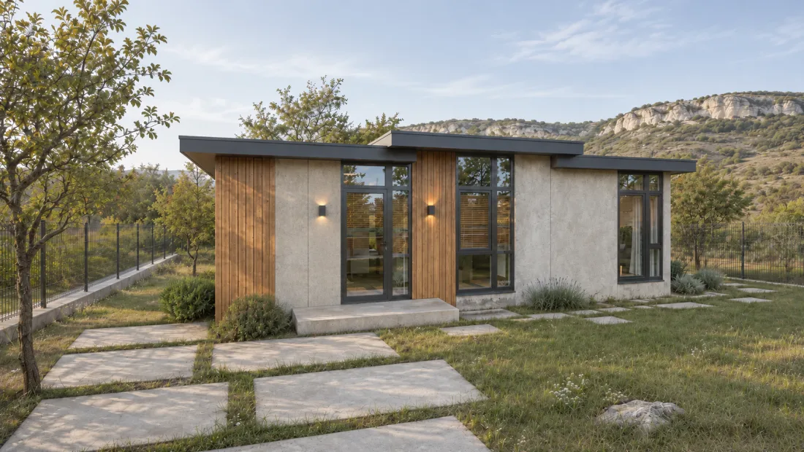
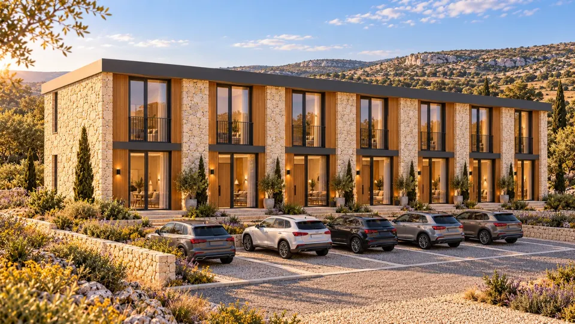
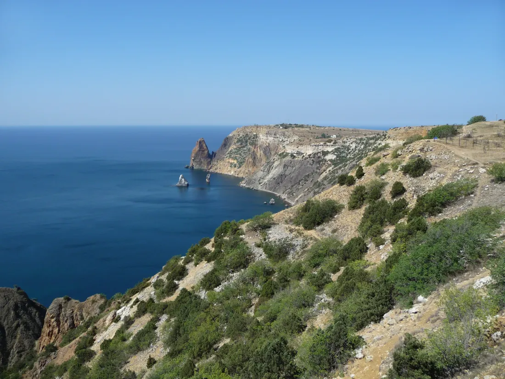

Дом 89
80,1 м² внутри. Три спальни и кухня-гостиная 29,2 м².

Крым · дома из заводских панелей
Дома для жизни, доходные дома и гостевые комплексы под ваш участок.




Сначала — замысел
Увязываем планировку, посадку дома и вид из окон.
Три спальни и 80,1 м² внутри. Этапы строительства показаны на иллюстрациях.
Каталог

Несколько квартир в одном здании. Подбираем квартирографию под участок и задачу аренды.
Смотреть проекты
От отдельного домика до комплекса. Продумываем входы, приватность, дорожки и общие зоны.
Смотреть варианты
Где открывается вид? Как заедет кран? Где удобнее поставить дом и вывести террасу? Начинаем проект с этих вопросов.
Сравниваете с СИП или каркасом? Сопоставьте одинаковую комплектацию, характеристики стены и состав работ по смете.
Как сравнить технологииИндивидуальный проект
Укажите наружные габариты и уровень готовности. Узнайте площадь и периметр, затем отправьте параметры для сметы.
Обсудить проект с нами ↗